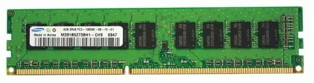
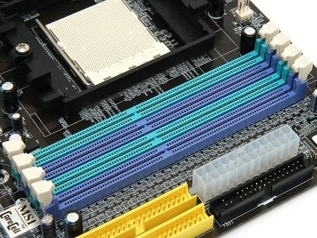

메모리 즉, RAM(Random Access Memory)은 데이터를 저장하거나 저장된 데이터를 읽어내는 ‘기억 장치’로, 디스크와 달리 전원이 꺼지면 데이터가 지워지는 특징을 가지고 있습니다. 메모리 종류에는 SDRAM, RDRAM, DDR SDRAM 등이 있으며, 현재는 DDR SDRAM 종류만 사용되고 있습니다. DDR 메모리는 ‘Double Data Rate Synchronous Dynamic Random Access Memory’의 약자로, 줄여서 DDR SDRAM이라고 합니다. DDR 메모리는 DDR1, DDR2, DDR3, DDR4로 분류되며 현재 대부분 DDR3 SDRAM을 지원하고 있습니다.

2) 메모리 용량메모리 용량이란 1개의 메모리 기판에서 제공하는 용량을 의미합니다. 단위는 GB(기가바이트)이며, 2의 제곱 단위로 올라갑니다. 예를 들어, 1GB에서 시작해 2GB, 4GB, 8GB, 16GB…순으로 용량이 커지게 됩니다. 일반적으로 컴퓨터는 메모리의 용량이 클수록 속도가 빨라집니다. 메모리 용량이 부족할 경우 부득이하게 하드디스크에서 직접 데이터를 읽어오는데, 이때 작업 속도가 매우 느려지기 때문입니다. 따라서 메모리가 부족한 경우 용량을 증설하면 속도가 향상될 수 있지만 ‘작동 속도’ 자체가 빨라지는 것이 아니라, ‘용량’을 늘리는 개념이기 때문에 메모리가 충분한 경우에는 추가적으로 메모리를 늘린다고 해서 속도가 향상되지는 않습니다. 메모리를 구입할 때 고려해야 할 점은 메인보드에서 인식 가능한 메모리 종류와 최대 메모리 용량이 정해져 있다는 것입니다. 또한 운영체제가 32Bit라면 3GB 이상의 메모리는 사용할 수 없습니다. 운영체제 설정을 변경해서 3GB 이상을 인식시키는 방법이 있긴 하지만, 권장하지는 않습니다. 4GB 이상의 메모리를 사용하기 위해서는 64Bit의 운영체제를 사용해야 합니다. 즉 RAM은 메인보드와 운영체제를 고려해서 구입해야 합니다. 적절한 메모리 용량을 결정하기 위해서는 서버에서 사용하는 프로그램의 요구 사항을 확인해야 합니다. 권장 사양으로 제시하는 메모리 용량으로 시작하면 좋겠지만, 최소 사양의 메모리 용량으로 시작하여 더 큰 메모리 용량이 필요할 때 추가해가는 것도 괜찮은 방법입니다.
3) 동작 클럭동작 클럭은 메모리의 동작 속도를 나타내고, 이 숫자가 클수록 동작 속도가 빠름을 의미합니다. 메모리의 속도는 메모리 자체 속도와 CPU와의 데이터 전송폭을 모두 고려합니다. 예를 들면 보통 DDR3 메모리는 ‘DDR3-1600’과 같이 표기합니다. 여기서 ‘1600’은 전송 속도가 1,600Hz라는 것을 의미합니다. 이 수치는 실제 내부 동작 속도가 아닌, 초당 데이터 전송 수를 나타냅니다. DDR3의 표기 속도가 1,600MHz라면 실제 내부 동작 속도는 200MHz이고, 이는 1,600MT/s입니다. 한 번에 8byte의 데이터를 전송하므로 이에 다시 8을 곱하면 12,800MB/s가 됩니다. 이것이 초당 바이트 전송률이고, 흔히 ‘대역폭(Bandwidth)’이라고 합니다. 이 수치는 모듈 이름에도 사용되고 있습니다. 따라서 DDR3-1600은 PC3-12800과 동일한 제품에 해당합니다.
4) 슬롯메모리는 메인보드의 메모리 삽입구에 꽂을 수 있는데, 이 삽입구를 ‘슬롯’이라고 부릅니다. 메모리 슬롯이 8개인 서버는 메모리를 최대 8개까지 장착할 수 있습니다. 최근에는 메모리 슬롯이 수십 개로 늘어나는 추세이지만, 슬롯 개수를 초과해서 메모리를 장착할 수 없기 때문에 메인보드의 메모리 슬롯 개수를 정확히 알아두어야 합니다. 또한 서버 확장이 예정되어 있다면, 비싸더라도 대용량 메모리를 장착하는 것이 좋습니다.

5) ECC 메모리메모리는 메인보드의 메모리 삽입구에 꽂을 수 있는데, 이 삽입구를 ‘슬롯’이라고 부릅니다. 메모리 슬롯이 8개인 서버는 메모리를 최대 8개까지 장착할 수 있습니다. 최근에는 메모리 슬롯이 수십 개로 늘어나는 추세이지만, 슬롯 개수를 초과해서 메모리를 장착할 수 없기 때문에 메인보드의 메모리 슬롯 개수를 정확히 알아두어야 합니다. 또한 서버 확장이 예정되어 있다면, 비싸더라도 대용량 메모리를 장착하는 것이 좋습니다.
Powered by Brian Kim.